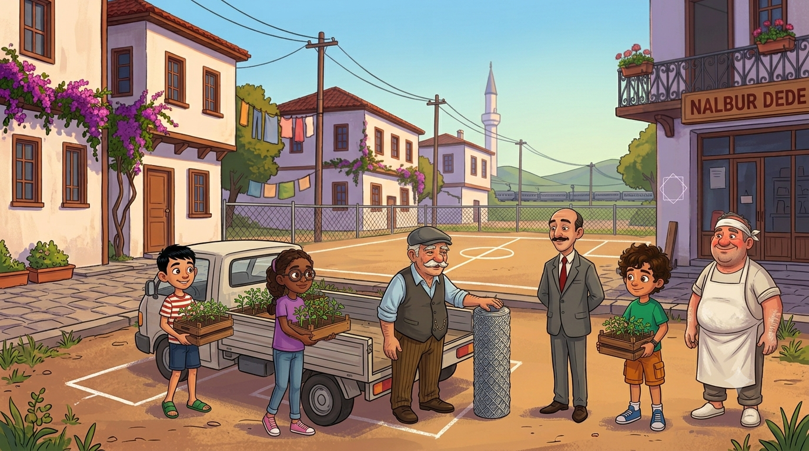
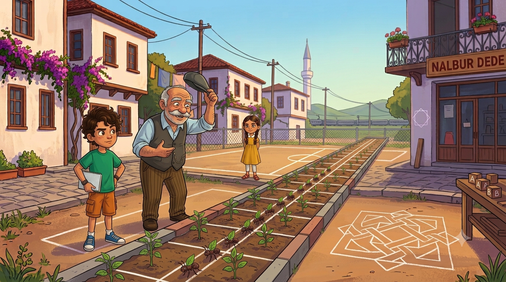
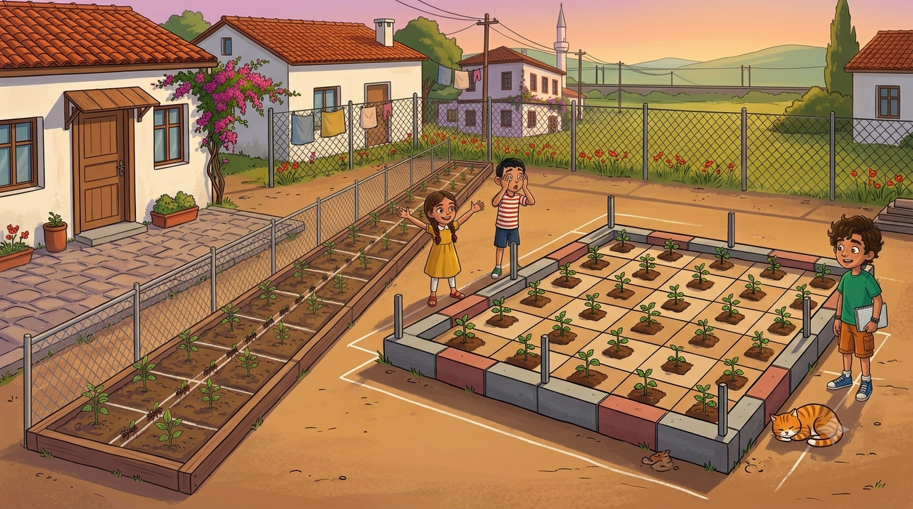
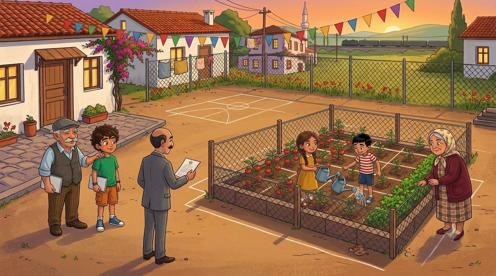

Belediyeden mahalleye 24 metre tel çit ve bir kamyon fide geldi: arsanın köşesine sebze bahçesi kurulacak! Ama aynı 24 metre çitle upuzun incecik bahçe de olur, kocaman kare bahçe de. Hangisi daha çok domates verir? Çevre ile alanın büyük sırrı bu hikayede çözülüyor!
Kermesten kalan paranın bir kısmıyla muhtar bir sürpriz yaptı; hoparlörden anons etti tabii, üç boğaz temizlemeli: "Sayın mahalleli! Belediyemizin katkılarıyla sahamızın yanındaki boş köşeye SEBZE BAHÇESİ kurulacaktır! Tel çit ve fideler yoldadır! Domatesler ortak, sulama nöbetledir!" Mübeccel Teyze balkondan şartını koştu: "Bir sıra da maydanoz olacak, pazarlıksız!"
Kamyon geldi; içinden bir rulo tel çit, kazıklar ve kasa kasa fide çıktı. Çitin etiketinde kocaman yazıyordu: 24 metre. Ne bir metre fazla, ne bir metre eksik. Dedem teli şöyle bir yokladı: "Sağlam telmiş. E hadi bakalım, bu 24 metreyle bahçenin sınırını çizeceğiz."
Muhtar bana döndü; ben artık bu bakışı uzaktan tanıyorum. "Sekizinci göreviniz..." diye başladı. "Bahçe Planlama Genel Sorumlusu." Deftere yazdım: "Görev 8: 24 metre çitle bahçe kur. Durum: Toprak işine de girdik."

İlk aklıma gelen şekli kurdum: upuzun, incecik bir bahçe. Boyu 11 metre, eni 1 metre. Kazıkları çaktık, teli gerdik: 11 + 1 + 11 + 1 = tam 24 metre. Çit cuk oturdu. Gururla geri çekildim. Dedem bahçeye baktı, kasketini kaldırdı: "Evlat, bu bahçe değil, koridor. Domates buraya sığmaz, ancak yan yan yürüyen karınca sığar."
Elif çitin etrafında bir tur attı: "Abi, çitin uzunluğuna çevre denir. Dikdörtgende hesabı kolay: 2 × (en + boy). Senin koridor: 2 × (1 + 11) = 24. Doğru. Ama..." — durdu, gözleri parladı, ben bu parlamayı da uzaktan tanıyorum — "...aynı 24 metreyle BAŞKA dikdörtgenler de kurulur! 2 ile 10... 3 ile 9... 4 ile 8... 5 ile 7... 6 ile 6! Hepsinin çevresi 24!"
Emre şaşırdı: "Hepsi aynı çitle mi? O zaman hepsi aynı bahçe!" Elif muzip muzip güldü: "Öyle mi dersin? Yarın görürsün." O gece rüyamda karıncaların benim koridor bahçemde tek sıra yürüdüğünü gördüm. Önde de horoz vardı.
📏 Defterime not aldım: Çitin uzunluğu = çevre: Ç = 2 × (en + boy). Gösterim: Ç(ABCD). Aynı çevreyle FARKLI dikdörtgenler kurulabilir! Dört kenarı eşit olursa: kare — özel dikdörtgen.

Ertesi gün Elif kolunun altında bir tomar kartonla geldi. Hepsi birer metrekare: "Her biri 1 metre × 1 metre. Adı: birim kare. Bahçenin içine kaç tane sığarsa, bahçenin alanı o kadar metrekaredir. Alan, toprağın ta kendisidir!"
Önce benim koridora dizdik: 1 sıra, 11 karton. 11 metrekare. Sonra teli söküp 6'ya 6'lık kare bahçe kurduk; aynı 24 metre çit. Kartonları dizdik: 6 sıra, her sırada 6 karton... 36 metrekare! Emre kartonları üç kere saydı, üçünde de 36 buldu: "Aynı çit... ama toprak üç kat fazla! Bu nasıl oluyor? Büyücülük mü?"
Dedem güldü: "Büyü değil, matematik. Çevre çitin hesabı, alan toprağın hesabı; ikisi ayrı şeyler. Kenarlar birbirine yaklaştıkça toprak genişler. Aynı çitle en geniş bahçeyi kare verir." Sonra ekledi: "Onun için atalar 'tarlanı kare tut' der." Ben bu atasözünü hiç duymamıştım ama dedemin atasözlerine itiraz edilmez; belki de o an uydurmuştur, orası dedeyle Allah arasında.
🟩 Defterime not aldım:Alan = içine sığan birim kare sayısı: A = en × boy, birimi m², cm², br². Gösterim: A(ABCD). Aynı çevrede kenarlar eşitlendikçe alan BÜYÜR: 1×11=11 ama 6×6=36!

Karar verildi: bahçemiz 6'ya 6, kare. Toprağı belledik, sıraları çektik. Fide hesabı da benden soruldu: her metrekareye 4 domates fidesi. 36 × 4 = 144 fide. Mübeccel Teyze'nin maydanoz sırası da unutulmadı: bir kenar boyunca 6 metrekare maydanoza ayrıldı. Mübeccel Teyze balkondan denetledi: "Sıra düzgün, aferin. Benim maydanozun alanı kaç?" — "6 metrekare Mübeccel Teyze!" — "Az bile."
Akşam bahçenin başında toplandık. Çit gerili, fideler dikili, her şey yerli yerinde. Dedem elini omzuma koydu: "Bak evlat," dedi, "bir dönemde neler yaptın: nokta koydun, doğru çektin, açı ölçtün, çokgen tanıdın, üçgen inşa ettin, milyarları okudun, kasa tuttun, bahçe kurdun. Defterin doldu, aklın da." Defterime baktım: gerçekten dolmuştu. Yeni defter almam gerekecekti. İyi ki gerekecekti.
Tam o sırada muhtar geldi; elinde resmî bir kâğıt: "Sayın Bahçe Planlama Genel Sorumlusu! Belediye, bahçe için ÖLÇÜM RAPORU istemektedir! Çevreler, alanlar, hepsi eksiksiz olacaktır!" Son görev. Hadi bakalım, dönemin finali...
🍅 Defterime not aldım: Gerçek hayatta çevre = çit, kenarlık, şerit hesabı; alan = toprak, boya, halı, fayans hesabı. İkisini karıştıran, karınca koridoru yapar!

Bahçe Ölçüm Raporu! 🎯
Belediyenin istediği rapor için her soruda doğru sayıyı seç! (Bahçe: 6 m × 6 m kare · her m²'ye 4 fide)
⭐ Puan: 0❓ Soru: 1/5
🏆 Dönem Tamamlandı!
Rapor belediyeye teslim edildi. İlk domatesler kızardığında mahalle bahçede toplandı; muhtar megafonla son anonsu yaptı: "Sayın mahalleli! Bu mahalle noktadan bahçeye, matematiğin tamamını yaşayarak öğrenmiştir!" Horoz bile onayladı.
Kâşif Defteri — bugün öğrendiklerimiz:
• Çevre = kenarların toplamı: Ç = 2 × (en + boy) — çitin hesabı
• Alan = birim kare sayısı: A = en × boy — toprağın hesabı (m², cm², br²)
• Aynı çevreyle farklı dikdörtgenler kurulur; alanları FARKLIDIR
• Kenarlar eşitlendikçe alan büyür — aynı çitle en geniş bahçe: KARE
• Kare, özel bir dikdörtgendir